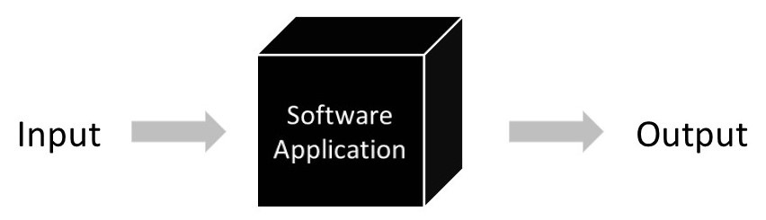

Session Opening
Blackbox and Whitebox Testing
Understanding testing strategies based on knowledge of code internals and functional specifications.
Blackbox
Whitebox
Strategy
Session Opening
Understanding testing strategies based on knowledge of code internals and functional specifications.
Agenda
Learning Outcomes
Foundations
Testing strategy determines how we approach testing based on what we know about the system under test, focusing on either external behavior or internal structure.

Blackbox Testing

Blackbox Testing
Whitebox Testing

Whitebox Testing
Comparison
| Aspect | Blackbox | Whitebox |
|---|---|---|
| Focus | Functionality | Code Structure |
| Knowledge | No implementation | Full implementation |
| Testing | User perspective | Developer perspective |
| Coverage | Requirement-based | Code-based |
When to Use
Practical Example
Workshop 1
Exercise: Classify these test scenarios as Blackbox or Whitebox:
5 minutes discussion time
Part 2: Blackbox Testing
Divide input domain into classes where all values should behave similarly:
Blackbox Example
Requirements: Accept ages 18-65 for job application
| Partition | Range | Test Value | Expected |
|---|---|---|---|
| Too young | < 18 | 16 | Invalid |
| Valid age | 18-65 | 25 | Valid |
| Too old | > 65 | 70 | Invalid |
Blackbox Technique
Test values at the edges of input domains where errors commonly occur:
Workshop 2
Scenario: Password strength validator
Rules: 8-20 characters, must contain uppercase, lowercase, digit
Your task (10 minutes):
Blackbox Advanced
Systematic approach for complex business rules with multiple conditions:
| Condition | Rule 1 | Rule 2 | Rule 3 | Rule 4 |
|---|---|---|---|---|
| Age ≥ 18 | T | T | F | F |
| Has License | T | F | T | F |
| Action | Allow | Reject | Reject | Reject |
Each column represents a test case
Part 3: Whitebox Testing
Code coverage measures how much of your source code is tested:
Whitebox Example
Code Example:
public int divide(int a, int b) {
if (b == 0) { // Line 1
throw new Exception(); // Line 2
}
int result = a / b; // Line 3
return result; // Line 4
}Test: divide(10, 2) covers lines 1, 3, 4 = 75% coverage
Missing: Line 2 (exception path)
Whitebox Example
Same Code with Branch Focus:
public int divide(int a, int b) {
if (b == 0) { // Decision point: TRUE or FALSE?
throw new Exception();
}
int result = a / b;
return result;
}Need 2 tests for 100% branch coverage:
Workshop 3
Analyze this function:
public String grade(int score) {
if (score >= 90) {
return "A";
} else if (score >= 80) {
return "B";
} else if (score >= 70) {
return "C";
} else {
return "F";
}
}Task: How many test cases for 100% path coverage?
5 minutes - identify all execution paths
Whitebox Advanced
Measure of code complexity based on decision points:
Formula Elements:
Testing Tools
Part 4: Labs
Lab 1 - Calculator Testing (20 minutes):
Lab 2 - BankAccount Testing (20 minutes):
Assessment
Questions for discussion:
Real-world Application
Lab Exercise
In our lab, you will:
Best Practices
Summary